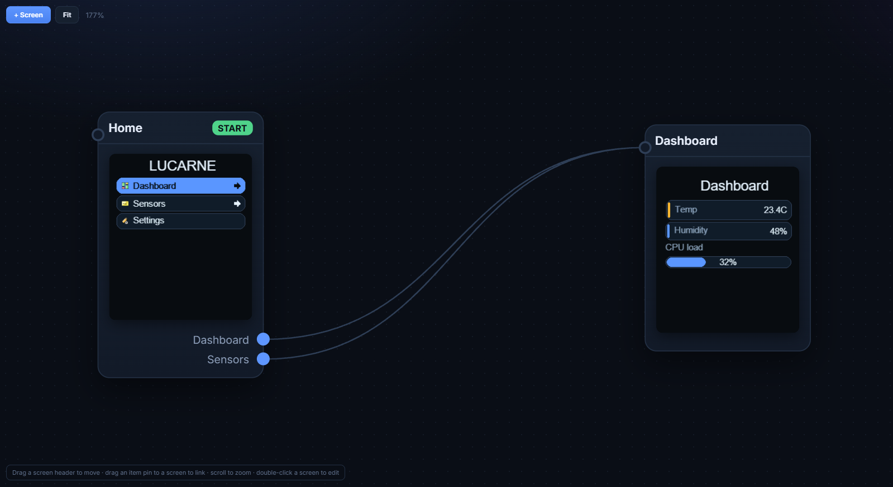
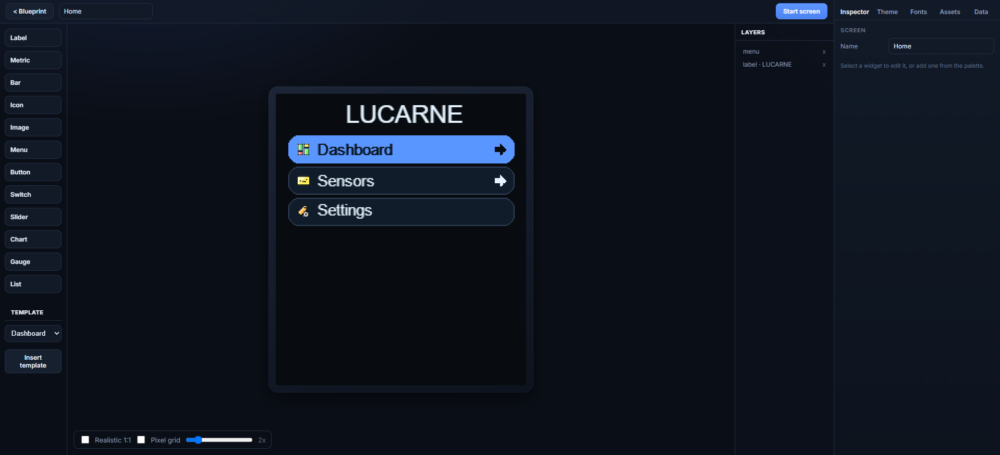
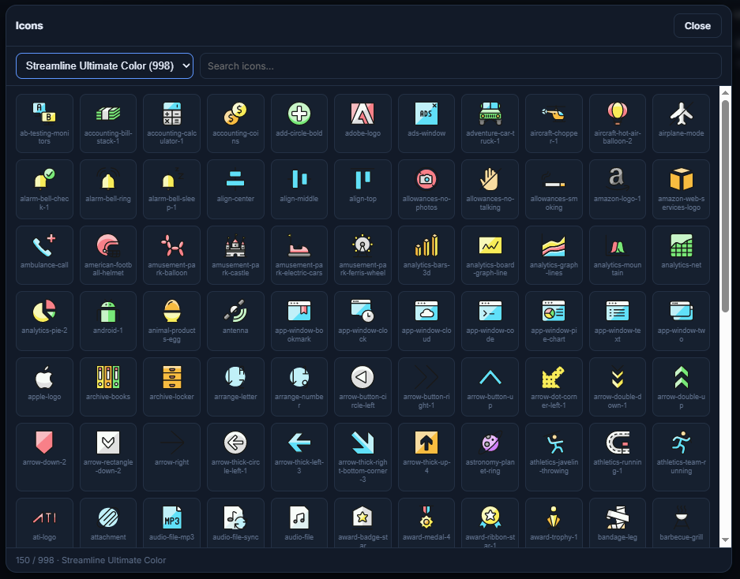
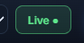
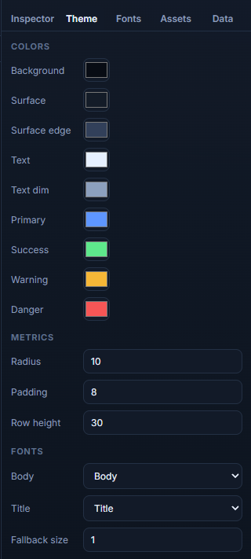

Interfaces pour petits écrans SPI (ST7789, ST7735S) sur Arduino et ESP32. Dessinez dans Studio, exportez du C++, flashez.
UIs for small SPI displays (ST7789, ST7735S) on Arduino and ESP32. Design in Studio, export C++, flash.
En bref
In short
Installer la libInstall the libraryCopiez Lucarne dans Arduino/libraries.Copy Lucarne to Arduino/libraries.
Ouvrir StudioOpen Studioeditor/index.html — bientôt aussi en ligne.editor/index.html — hosted version coming.
Exporter & flasherExport & flashExport Headers + Files (SD) → copier à côté du .ino → compiler.Export Headers + Files (SD) → copy next to .ino → build.
Installation
Installation
Librairie firmware + éditeur web (aucun npm requis).
Firmware library + web editor (no npm required).
Arduino IDE
Dossier du repo → Documents/Arduino/libraries/Lucarne
Repo folder → Documents/Arduino/libraries/Lucarne
PlatformIO
lib/Lucarne/ouorlib_deps
Lucarne Studio
Servez editor/ (Live Server, python -m http.server…) et ouvrez index.html. Le projet se sauvegarde dans le navigateur ; Save / Load pour un fichier .lucarne.json.
Serve editor/ (Live Server, python -m http.server…) and open index.html. Project auto-saves in the browser; Save / Load for a .lucarne.json file.
Vue d'ensemble : blueprint, réglages écran et inspecteur projet.Overview: blueprint, display settings and project inspector.
BlueprintAjoutez des écrans (+ Screen). Reliez les entrées de menu d'un écran à un autre en tirant un lien. Double-clic = ouvrir le designer.Add screens (+ Screen). Drag menu item links between screens. Double-click = open designer.
SimulateFlèches ou pad = menu. Clic sur boutons/switches. Teste les transitions.Arrows or pad = menu. Click buttons/switches. Tests transitions.
Barre du haut
Top bar
ÉlémentItem
RôleRole
Device
Modèle d'écran et résolution (240×280, 128×128…)Panel preset and resolution (240×280, 128×128…)
Rotation
Orientation logique 0° à 270°Logical orientation 0° to 270°
Live
Connexion USB pour aperçu sur carte réelleUSB connection for on-device preview
Export .h
Génère les headers C++ du projetGenerates project C++ headers
Save / Load
Fichier projet .lucarne.jsonProject file .lucarne.json

Blueprint : écrans, liens de menu et écran START.Blueprint: screens, menu links and START screen.

Designer : palette widgets, canvas et calques.Designer: widget palette, canvas and layers.
Export Arduino
Arduino export
Studio génère le UI et Projet_setup.h (broches, SD). Copiez les binaires SD sur la carte.
Studio generates the UI and Projet_setup.h (pins, SD). Copy SD binaries to the card.
Export dans Studio → onglets Headers et Files (SD). in Studio → Headers and Files (SD) tabs.
Headers : Projet.h, Projet_setup.h, éventuellement Projet_fonts.h, Projet_images.h, Projet_icons.h à côté du .ino.Headers: Projet.h, Projet_setup.h, optional Projet_fonts.h, Projet_images.h, Projet_icons.h next to .ino.
Files (SD) : copiez assets/*.rgb565 sur carte FAT32 (voir SD_MANIFEST.txt).Files (SD): copy assets/*.rgb565 to FAT32 card (see SD_MANIFEST.txt).
Broches SPI / SD : onglet Studio Hardware → réglages dans Projet_setup.h.SPI / SD pins: Studio Hardware tab → settings in Projet_setup.h.
home settings wifi bluetooth battery thermo drop fan bell chart power sun lock check cross arrow_up arrow_down arrow_left arrow_right play pause plus minus

Assets → icônes : packs Streamline, Tabler, recherche et export embarqué.Assets → icons: Streamline, Tabler packs, search and embedded export.
Transitions
SlideLeft, Fade, Push… — nécessitent BufferMode::Full. back() inverse les slides. Splash : écran START + durée dans l'inspecteur nœud.
SlideLeft, Fade, Push… — need BufferMode::Full. back() reverses slides. Splash: START screen + duration in node inspector.
Câblage
Wiring
Écran SPI, carte SD optionnelle, entrées navigation.
SPI display, optional SD card, navigation inputs.
Configurez broches SPI, SD et entrées dans Studio → onglet Hardware. L'export génère Projet_setup.h.
Set SPI, SD and input pins in Studio → Hardware tab. Export generates Projet_setup.h.
Black screen? Try spiMode 3. Wrong colors? invert or ColorOrder RGB/BGR.
Carte SD (images)
SD card (images)
Bus SPI partagé : MOSI, MISO, SCLK communs ; CS séparés pour écran et SD. Montez la SD avant ui.begin(). Copiez les fichiers export Files (SD) sur la carte (FAT32).
Shared SPI bus: common MOSI, MISO, SCLK; separate CS for display and SD. Mount SD before ui.begin(). Copy Files (SD) export onto the card (FAT32).
Voir le design sur la vraie carte en USB — sans reflasher à chaque changement de widget.
See the design on real hardware over USB — no reflash per widget change.
FlasherFlashexamples/LucarnePreview/LucarnePreview.ino — ESP32-S3 : USB CDC On Boot activé. Pas de Serial.print. — ESP32-S3: USB CDC On Boot on. No Serial.print.
ConnecterConnect

Chrome/Edge : bouton Live dans la barre du haut → choisir le port. Fermez le moniteur série Arduino.Chrome/Edge: Live button in the top bar → pick the port. Close the Arduino serial monitor.
Designer ou SimulateDesigner or Simulate = ce qui s'affiche sur l'écran. = what appears on the panel.
Polices & exemples
Fonts & examples
Polices
Fonts
Inclus : LucarneFontBody et LucarneFontTitle (Fira Sans, anti-aliasé). Studio → Fonts : Google ou TTF → assigner dans Theme → export Projet_fonts.h.
Included: LucarneFontBody and LucarneFontTitle (Fira Sans, anti-aliased). Studio → Fonts: Google or TTF → assign in Theme → exports Projet_fonts.h.

Onglet Theme : palette, radius/padding et polices body/title.Theme tab: palette, radius/padding and body/title fonts.
Exemples Arduino
Arduino examples
Sketch
UsagePurpose
HelloLucarne
Gfx bas niveau, sans UI runtimeLow-level Gfx, no UI runtime
LucarneUI
Dashboard Metric/Bar et liaison de donnéesDashboard Metric/Bar and data binding
Non. Lucarne cible les petits écrans SPI avec un flux design → export C++ statique, léger en RAM, sans moteur de rendu lourd sur la carte. LVGL reste plus adapté aux UIs complexes multi-couches avec beaucoup de widgets dynamiques.
No. Lucarne targets small SPI panels with a design → static C++ export flow, light on RAM, without a heavy on-device renderer. LVGL remains better for complex multi-layer UIs with many dynamic widgets.
Faut-il Internet pour utiliser Studio ?Do I need Internet for Studio?
Non pour l'édition de base. Internet sert surtout à charger des polices Google Fonts et les icônes Tabler si elles ne sont pas embarquées. Les packs Streamline/Glyphs inclus fonctionnent hors ligne.
No for basic editing. Internet is mainly for Google Fonts and Tabler icons when not embedded. Bundled Streamline/Glyphs packs work offline.
Où est sauvegardé mon projet ?Where is my project saved?
Dans le stockage local du navigateur (localStorage). Utilisez Save pour un fichier .lucarne.json portable. Effacer les données du site supprime le projet non exporté.
In browser localStorage. Use Save for a portable .lucarne.json file. Clearing site data deletes an unexported project.
Studio & export
Dois-je re-exporter après chaque modification ?Must I re-export after every change?
Oui pour le firmware final. Live Preview affiche le design sans reflasher Projet.h. Dès que vous voulez le UI sur la carte dans votre app, régénérez les headers et recompilez.
Yes for final firmware. Live Preview shows the design without reflashing Projet.h. Once you want the UI in your app on device, regenerate headers and rebuild.
Quels fichiers l'export produit-il ?What files does export produce?
Headers : Projet.h, Projet_setup.h, et si besoin Projet_fonts.h, Projet_images.h, Projet_icons.h. Files (SD) : assets/*.rgb565 + SD_MANIFEST.txt.
Headers: Projet.h, Projet_setup.h, and when needed Projet_fonts.h, Projet_images.h, Projet_icons.h. Files (SD): assets/*.rgb565 + SD_MANIFEST.txt.
Où configurer les broches SPI et SD ?Where do I set SPI and SD pins?
Onglet Studio Hardware (bus SPI, écran, SD, entrées). L'export écrit Projet_setup.h avec initSpiBus(), displayPins(), mountSdCard(). Vous pouvez surcharger dans le .ino si besoin.
Studio Hardware tab (SPI bus, display, SD, inputs). Export writes Projet_setup.h with initSpiBus(), displayPins(), mountSdCard(). Override in your .ino if needed.
Comment fonctionnent les callbacks menu/bouton ?How do menu/button callbacks work?
Dans Studio, choisissez l'action Callback et un ID (ex. open_settings). L'export crée projet::ACTION_OPEN_SETTINGS. Dans loop(), lisez ui.pollMenuAction() dans un switch — une seule action consommée par appel.
In Studio, set action Callback and an ID (e.g. open_settings). Export creates projet::ACTION_OPEN_SETTINGS. In loop(), read ui.pollMenuAction() in a switch — one action consumed per call.
Affichage & matériel
Display & hardware
Écran noir, rétroéclairage alluméBlack screen, backlight on
Testez options.spiMode = 3 (fréquent sur ST7789). Vérifiez MOSI/SCLK/CS/DC/RST. Lancez LucarneDiag pour valider le panneau.
Try options.spiMode = 3 (common on ST7789). Check MOSI/SCLK/CS/DC/RST. Run LucarneDiag to validate the panel.
Couleurs inversées ou rouge/bleu permutésInverted or red/blue swapped colors
Basculez options.invert et/ou options.colorOrder (RGB vs BGR). Mêmes réglages que dans vos autres croquis qui fonctionnent.
Toggle options.invert and/or options.colorOrder (RGB vs BGR). Match settings from sketches that already work.
Bande de bruit en bas (240×280)Garbage band at bottom (240×280)
Le ST7789 240×280 utilise un offset vertical. Lucarne l'applique par défaut ; sur module exotique, ajustez rowStart / colStart dans DisplayOptions.
ST7789 240×280 uses a vertical offset. Lucarne applies it by default; on exotic modules, tune rowStart / colStart in DisplayOptions.
Les transitions ne s'animent pasTransitions don't animate
Il faut BufferMode::Full et assez de RAM pour deux snapshots temporaires. En BufferMode::None, les changements d'écran sont instantanés.
You need BufferMode::Full and enough RAM for two temporary snapshots. With BufferMode::None, screen changes are instant.
Données, widgets, icônes
Data, widgets, icons
Ma Metric affiche toujours la même valeurMy Metric always shows the same value
Vérifiez que la clé dans l'onglet Data correspond au widget, et que vous appelez ui.setFloat("ma_cle", valeur) (ou int/bool/string) puis ui.update() dans loop().
Check the Data tab key matches the widget, and call ui.setFloat("my_key", value) (or int/bool/string) then ui.update() in loop().
Icône pack absente à l'exportPack icon missing in export
Seules les icônes réellement utilisées dans le projet sont exportées. Ouvrez le projet avec les packs chargés (serveur local sur editor/) avant d'exporter.
Only icons actually used in the project are exported. Open the project with packs loaded (local server on editor/) before exporting.
Image SD : écran vide ou carré noirSD image: blank or black square
Vérifiez mountSdCard() avant ui.begin(), le chemin source dans Projet_images.h, et que le fichier est bien sur la SD (onglet export Files (SD)). pins.miso doit être défini dans Hardware.
Check mountSdCard() before ui.begin(), the source path in Projet_images.h, and that the file is on the SD (Files (SD) export tab). Set pins.miso in Hardware.
Le Slider ne réagit pas au toucherSlider doesn't respond to touch
Normal : le Slider est affichage seul. Mettez à jour la clé depuis votre code ou un autre contrôle. Le drag tactile n'est pas implémenté côté firmware.
Expected: Slider is display-only. Update the key from your code or another control. Touch drag is not implemented in firmware.
Live Preview
Le bouton Live ne fait rienLive button does nothing
Utilisez Chrome ou Edge (Web Serial). Fermez le moniteur série de l'IDE Arduino. Flashez LucarnePreview.ino avec USB CDC activé sur ESP32-S3.
Use Chrome or Edge (Web Serial). Close the Arduino IDE serial monitor. Flash LucarnePreview.ino with USB CDC enabled on ESP32-S3.
Live vs firmware exportéLive vs exported firmware
Live envoie des images calculées par Studio. Votre app avec Projet.h exécute le vrai runtime UI sur la carte. Utilisez Live pour itérer visuellement, puis exportez pour le produit final.
Live sends frames rendered by Studio. Your app with Projet.h runs the real UI runtime on device. Use Live to iterate visually, then export for production.
Remerciements & licences
Acknowledgements & licenses
Fira SansPolice par défaut (corps et titre). SIL Open Font License 1.1 — Mozilla Foundation.Default body and title font. SIL Open Font License 1.1 — Mozilla Foundation.
Tabler IconsPack d'icônes optionnel dans Studio. MIT License — Tabler.Optional icon pack in Studio. MIT License — Tabler.
Streamline & Glyphs packsIcônes couleur 32×32 embarquées dans l'éditeur. Voir les licences des packs respectifs dans le dépôt distributeur.32×32 color icons embedded in the editor. See respective pack licenses in the distribution repo.
Arduino & ESP32Toolchains et cores utilisés pour compiler les exemples — non inclus dans Lucarne.Toolchains and cores used to build examples — not bundled with Lucarne.
Lucarne est un projet open source. Contributions et retours bienvenus sur le dépôt GitHub.
Lucarne is an open source project. Contributions and feedback welcome on the GitHub repository.